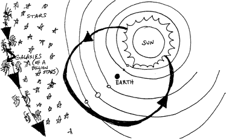

Cretinism or Evilution? No. 2
Edited by E.T. Babinski
Biblical Astronomy

|
Contents |
Next |
"Biblical Astronomy!"
The latest advance in "creation science!"
A view advocated by some modern day creationists. The earth lies at the center of the universe. The sun revolves around the earth. All the remaining planets revolve around the sun, while the stars and distant galaxies; revolve around the sun on a daily basis.

"Biblical astronomy" (as displayed in the figure, above) originated in the 16th century. Its most notable exponent was Tycho Brahe (a Danish astronomer). Today's "Biblical astronomers" still advocate Brahe's System.
By the 17th century Brahe's System seemed improbable to people like Bernard Le Bovier de Fontenelle, Secretary of the French Academy of Sciences, who wrote in one of his popular science books: "Tycho Brahe, who had fixed the Earth in the Center of the Universe, turned the Sun round the Earth, and the rest of the Planets round the Sun, because new discoveries in astronomy left no way to have the Planets turn round the Earth. But among so many great Planetary bodies how could you exempt the Earth alone from turning round the Sun? It certainly seems improper to make the Sun turn round the Earth, when all the Planets turn round the Sun. Though Brahe's System was invented to maintain the immobility of the Earth, yet it was very improbable. So we resolve to stick to Copernicus, whose Opinion was most Uniform and Probable."
-
"Walter van der Kamp, Bible believing geocentrist and author of De
Labore Solis (self-published, Surrey, British Columbia, 1988, 172
pages) outlines the Tychonian model more precisely than previous
literature. According to van der Kamp, the immobile nonrotating Earth
is at the center of the Universe. The sun and moon go around it
daily, and the planets (the Earth is not one) go around the
sun. Centered on the sun and also whizzing around the Earth a little
faster is a shell, or Stellatum, where all the stars, galaxies,
and quasars are found, one-sixth of a light-year distant from us. No
known object is further than this, and a few stars are slightly
closer. Gravity, as we know it, does not exist.
"The book does not begin with this model which is not developed until after page 90. Instead, there is an historical and epistemological synopsis which tries to demonstrate that all astronomy since Copernicus is wrong. This essay is written in a vocabulary characteristic of philosophy texts but it misses the chance to capture and discuss the central angst of Mach and Einstein. Instead, it engages in cavalier sophistry.
"Van der Kamp's opus ends with an open letter to John Paul II, urging him not to abandon geocentrism and instead recondemn Galileo whose case was recently posthumously reviewed. The Holy Father's reply, if any, is not given."
- Francis G. Graham
-
"The heliocentric view as opposed to the old geocentric view is not
simply a matter of 'perspective.' Once Newton came along with his laws
of gravity, you could explain why planets move in ellipses, how
the Moon moves around the Earth, and why apples fall to the ground,
among other things. And, to satisfy parsimony, all these disparate
phenomena have the same explanation and the same very simple laws of
motion to obey. Blows Ptolemy [and his geocentric viewpoint -- with no
explanation of how or why things followed the paths they did] out of
the water."
- Rachel (3 months shy of a Ph.D. in astronomy -- on TALK.ORIGINS)
Not satisfied, like "scientific creationists," with merely wanting "evidence against the theory of evolution" taught in schools, today's Christian geocentrists want "evidence against the theory of gravity" taught in schools.
E. T. BABINSKI
Since the 1970s a few devout Protestant and Catholic scholars with Ph.D.s in physics and astronomy have begun to argue in favor of geocentrism ("geo"=earth "centrism"= lies at the center). These devout Bible believers maintain that the earth does not go round the sun, but that the sun, planets, and all the stars go round the earth. In the United States there is a society that defends Bible-based geocentrism, called the Association for Biblical Astronomy (founded in 1971 under the name of "The Tychonian Society"). The Association for Biblical Astronomy publishes a journal and books, and is led by a young-earth creationist who has a doctorate in astronomy from Case-Western Reserve University, Dr. Gerardus Bouw. Outside the U.S., in France and Belgium, a Catholic group called Cercle Scientifique et Historique, includes some members who support geocentrism.
Such geocentrists are also young-earth creationists and, like their young-earth brethren, "Biblical astronomers" feel the need to "point out flaws" in modern scientific evidence in light of "what Scripture tells us." And, like their young-earth partners, who publish "critiques of scientific arguments for an old-earth," these "Biblical astronomers" have recently published a number of books that "critique scientific arguments for a moving earth." They hope to open the eyes of the modern scientific community to the God-given truth that the earth doesn't move, or only moves slightly in comparison with the rest of the planets and stars in the cosmos, most of which must fly around the earth on a daily basis at speeds faster than light!
If the success of young-earth creationists at mobilizing "Bible believers" is any indication of future trends, then the cry, "Let's teach geocentrism!" can't be far behind. All it takes is some dedicated "Biblical astronomers" traveling tirelessly around the country, holding seminars at church after church, employing all the fancy "scientific" sounding rhetoric at their disposal to lead their brethren to cry out against "those lying, Satanic, evil believers in evolution, in an ancient earth, and a decentralized moving earth!"
This is not to say that all young-earth creationists agree with the new "science" of "Biblical astronomy." Most apparently do not. In fact, the young-earth creationists at the Institute for Creation Research recently published a pamphlet repudiating geocentrism. (See the July 1994 Impact article by Gerald Aardsma, available from the ICR for a nominal fee.) But it will take more than just a pamphlet to stop "Biblical astronomy" from spreading."Biblical astronomers" have debated their young-earth brethren at a few "Bible Science conventions," neither side being able to convince the other. And, among "Bible believers," the scripture verses supporting geocentrism provide formidable ammunition against mere "scientific" arguments to the contrary!
It's ironic but true, that Aardsma (the author of the ICR Impact article that defended ICR's heliocentric stance against encroaching geocentrist sentiments), agreed to leave ICR recently, because he no longer agreed with the lower range of ICR estimates for the age of the earth. Aardsma is absolutely convinced, via tree-ring data, that the earth cannot possibly be as young as 6,000 years. ICR still says the earth could be between 6,000 to 15,000 years old and ICR does not want to offend many of their supporters by "upping the lower limit" to 12,000 years as Aardsma has done.
That would offend too many folks who still believe that Bishop Ussher's "strictly Biblical" estimate of the age of the earth was the correct one, i.e., 6,000 years old.
E. T. BABINSKI
-
"40% of Americans surveyed believe that the sun moves around the
earth. I remember reading the news story a few months ago. A much
higher percentage knew the Earth moves around the Sun but weren't sure
how long it took. Some of them guessed one day! Over 40% can't point
out the Pacific Ocean on a blank map and over 50% don't believe in
Darwin yet. So you see Copernicus is doing better than Darwin. 60% of
the people understand Copernicus and only 50% understand Darwin,
because he hasn't been around as long."
- Robert Anton Wilson, interviewed in Boiled Boiled, Vol. 1, no. 1, 1989
|
Contents |
Next |